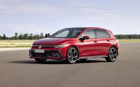

Niemiecka marka samochodów dla ludu

Obraz przedstawia jeden z samochodów volkswagena.
Volkswagen to niemiecka marka samochodów, której nazwa oznacza "samochód dla ludu". Jest znana z niezawodności i praktyczności. Volkswagen Group to jeden z największych koncernów samochodowych na świecie.